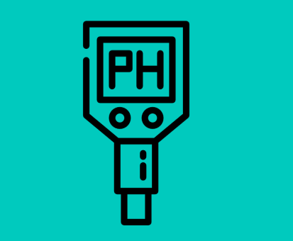

Recomendaciones pH
Si el pH es alto:
Lo mas recomendado es agregar materia orgánica (compost o estiercol).
En caso de usar productos quimicos agrega Agregando al agua acido acético o citrico para manipularlos
Si el pH es bajo:
En este caso tienes varias opciones como:
- Agregar cal al suelo
- Agregar ceniza de madera al suelo
- Agregar productos quimicos para subir pH como carbonato de calcio o oxido de magnesio